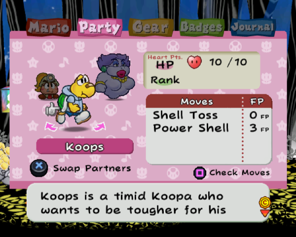

Please turn off Dark Reader.
TTYD Controller Icons Pack
This is a texture pack for Paper Mario: The Thousand-Year Door that has button labels for other controllers that one might use while emulating the game, such as the DualShock 4, JoyCon, Switch Pro Controller, or Steam Deck.
Installation:
Windows:
Manual Installation:
- Download the files from the GitHub Repository as a .zip
- Open your chosen platform's folder. Place the folder called "G8ME01" into "C:\Users\(user)\Documents\Dolphin Emulator\Load\Textures\"
- In the "G8ME01" folder, it should look something like this:
- In Dolphin, make sure "Load Custom Textures" is turned on in Graphics > Advanced > Utility
- Run the game and make sure it works. If it does, then that's all you have to do.
- If it didn't work, or your Dolphin user folder is in a different place, consider asking for help at the Team Prism Discord Server. Just ping me @pictocat! :-)

Linux / Steam Deck:
Note: I do not own a Steam Deck, so I cannot verify that this works...But it probably does.
Manual Installation:
- Download the files from the GitHub Repository as a .zip
- Open your chosen platform's folder. Place the folder called "G8ME01" into "~/.local/share/dolphin-emu/Load/Textures/"
- In the "G8ME01" folder, it should look something like this:
- In Dolphin, make sure "Load Custom Textures" is turned on in Graphics > Advanced > Utility
- Run the game and make sure it works. If it does, then that's all you have to do.
- If it didn't work, or your Dolphin user folder is in a different place, consider asking for help at the Team Prism Discord Server. Just ping me @pictocat! :-)

Screenshots:
Hover over images for more information.

